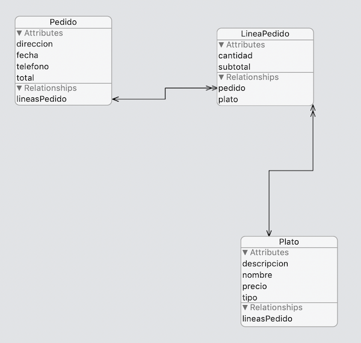

Miniproyecto: app restaurante¶
El objetivo es desarrollar una pequeña aplicación para gestionar pedidos online a un restaurante. Para ello almacenaremos los datos de la carta y de los pedidos realizados por el usuario en Core Data.
Descárgate la plantilla de la aplicación desde moodle, aquí está ya implementada la mayor parte de la interfaz.
El modelo de datos inicial (0.5 puntos)¶
Nuestro modelo de datos debe tener tres entidades, Plato, Pedido y LineaPedido. Esta última es la que relaciona los platos con los pedidos, guardando cuántas unidades de un plato se han incluido en un pedido.
Para simplificar, en una primera iteración, puedes crear solo la entidad Plato, solo con sus propiedades, sin relaciones. Más tarde puedes encargarte del resto (puedes ver el modelo completo en el apéndice del enunciado).
Plato:- Propiedades:
nombrede tipoStringdescripcionde tipoStringpreciode tipoDoubletipode tipoString
- Propiedades:
Se deberían usar tipos
Decimalen los precios para evitar errores de redondeo, pero usaremosDoublepor simplicidad. Además, el tipo del plato debería ser un enumerado, pero estos no se pueden almacenar directamente en Core Data. Tendríamos que generar manualmente el código de las entidades para poder representar los datos externamente como enums e internamente como otro tipo.
La Carta (3 puntos)¶
Esta parte de la app es la que muestra los platos y nos permite añadirlos al pedido.
Inicializar los datos¶
Los datos de los platos del restaurante están en un archivo platos.json. En el AppDelegate hay una función importPlatos que lee el JSON, lo almacena en un array de structs con los datos correspondientes, y pone una preferencia de usuario llamada platosImportados a true. El JSON solo se lee si la preferencia está a false (valor por defecto)
Añade código Swift que copie los datos de los structs a entidades Plato y guarde el contexto de persistencia para hacer efectivos los cambios.
Para forzar el borrado de la base de datos o las preferencias puedes usar la aplicación
SimSimpara borrar el almacenamiento de la appRestauranteen el simulador (selecciona la app y luego la opciónFinderpara abrir la carpeta). La base de datos de SQLite se almacena enLibrary/Application Supporty las preferencias de usuario enLibrary/Preferences
La pantalla de Carta (PlatosViewController)¶
En esta pantalla se deben mostrar los datos de los platos. Está controlada por el PlatosViewController. Iremos primero con que salgan los platos listados y luego con la funcionalidad del botón de "Añadir" al pedido.
Listado de platos
-
Usa un
NSFetchedResultsControllerpara listar los platos en la tabla. Haz que los platos se agrupen en secciones según su tipo.- Las celdas de la tabla son de la clase
PlatoTableViewCell, aquí ya están definidos los outlets para poder rellenar los datos.
- Las celdas de la tabla son de la clase
-
Implementa una búsqueda/filtrado de platos como hiciste en la aplicación de notas, que busque texto en el nombre o en la descripción del plato. Para aplicar el "filtro" puedes:
- Crear un predicado (
NSPredicate) con la condición de búsqueda y asignárselo a la propiedadfetchRequest.predicatedelNSFetchedResultsController. - Para que se actualicen los datos tendrás que hacer un
performFetchdelNSFetchedResultsController
- Crear un predicado (
Añadir al pedido actual
Las celdas de la tabla usan el patrón delegate para avisar de que se ha pulsado el botón "Añadir". Cada celda almacena su IndexPath (su número de fila y de sección) y tiene como delegate al controller de la pantalla.
Para avisar al controller de que se ha pulsado sobre "Añadir" se llama al método platoAñadido. Aquí tienes que obtener la entidad Plato elegida (la que está en la fila y sección seleccionadas) para que el código restante (ya implementado) se lo pase al controller de la pantalla siguiente.
El pedido actual (PedidoActualViewController) (3 puntos)¶
A partir de aquí necesitarás tener también las entidades Pedido y LineaPedido. Recuerda también añadir la relación lineasPedido a la entidad plato (puedes ver el modelo completo en el apéndice)
Esta parte de la app muestra los datos del pedido actual, añade los platos seleccionados al pedido y permite hacer el pedido o cancelarlo.
El controller recibe el plato elegido desde el controller anterior en la propiedad platoElegido, hay que añadir una entidad LineaPedido que vincule este plato con el pedido actual.
El pedido actual no se puede guardar en el propio controller ya que por la navegación entre pantallas este se destruiría al salir de ella. Por eso se debe guardar aparte, en la variable pedidoActual del singleton StateSingleton.shared. Esta variable estaba comentada para que no diera error ya que hasta ahora no existía la entidad Pedido, descoméntala.
Añadir el plato elegido al pedido¶
En el viewDidLoad de PedidoActualViewController nos tenemos que ocupar de añadir el plato elegido al pedido actual
- Primero comprueba si ya existe un
Pedidoactual (StateSingleton.shared.pedidoActual!=nil), y si no existe créalo en Core Data, guárdalo en elStateSingletony haz save() del contexto de persistencia - Crea un nuevo
LineaPedido- Asígnale cantidad 1
- Asócialo con el plato elegido. Recuerda que el plato elegido debería estar en la propiedad
platoElegidodel controller. - Asócialo con el pedido. Xcode debería haber generado un método de
PedidollamadoaddToLineasPedidopara añadir una línea de pedido a un pedido.
Cambiar la cantidad de un plato¶
En esta pantalla también se puede cambiar el número de unidades que queremos pedir de un plato.
Para simplificar solo podemos movernos entre 1 y 100, no podemos bajar las unidades a 0 y eliminar el plato
Al igual que en la pantalla anterior se usa la idea de delegate para saber qué celda se está seleccionando. Las celdas son de la clase LineaPedidoTableviewCell, y cada vez que se pulsa en un + o un - se avisa al delegate (en este caso el controller), pasándole el número de la fila.
El método cantidadCambiada del controller se llamará cada vez que el usuario cambie la cantidad de un plato. Añade código que obtenga la línea de pedido correspondiente, cambie la cantidad y guarde los cambios
Realizar y cancelar pedido¶
En la pantalla tienes dos botones para realizar y cancelar el pedido.
- Si se pulsa a "realizar" bastará con que le asignes la fecha actual al pedido, crees un nuevo pedido en
StateSingleton.shared.pedidoActualy muestres un mensaje al usuario indicando que "su pedido está en camino" o algo similar - Si se pulsa a "cancelar" deberías borrar en Core Data el pedido actual. Si la regla de borrado en cascada está puesta correctamente, al borrar un pedido deberían borrarse automáticamente todas sus líneas.
Tu historial (PedidosViewController) (hasta 4 puntos)¶
En esta pantalla se deberían mostrar todos los pedidos realizados por el usuario actual. Está en blanco y puedes crear la interfaz del modo que desees.
- (1 punto) Si en el
viewWillAppearmuestras los datos de todos los pedidos en la consola conprint, solo para ver que efectivamente se han almacenado correctamente - (2 puntos) Si muestras en una tabla una línea con el resumen de cada pedido (fecha, total y número de platos pedidos)
- (4 puntos) Si muestras una pantalla con el listado de pedidos y otra con los detalles de cada uno
Apéndice: el modelo de datos completo¶
Nuestro modelo de datos debe tener tres entidades, Plato, Pedido y LineaPedido. Esta última es la que relaciona los platos con los pedidos, guardando cuántas unidades de un plato se han incluido en un pedido.

Cada entidad debe tener las siguientes propiedades y relaciones
Plato:- Propiedades:
nombrede tipoStringdescripcionde tipoStringpreciode tipoDoubletipode tipoString
- Relaciones:
lineasPedido, relación "a muchos" con destinoLineaPedido. La inversa es la relaciónplato
- Propiedades:
Pedido:- Propiedades:
direccionde tipoStringtelefonode tipoStringfechade tipoDatetotalde tipo `Double
- Relaciones:
lineasPedido, relación "a muchos" con destinoLineaPedido. La relación debe ser ordenada, para poder mostrar las lineas de un pedido siempre en el mismo orden. La inversa es la relaciónpedido. En la regla de borrado (delete rule) ponCascadepara que al eliminar un pedido se eliminen automáticamente sus líneas.
- Propiedades:
LineaPedido:- Propiedades
cantidadde tipoInteger 16
- Relaciones
pedido, relación "a uno" con destinoPedido. La inversa es la relaciónlineasPedidoplato, relación "a uno" con destinoPlato. La inversa es la relaciónlineasPedido
- Propiedades